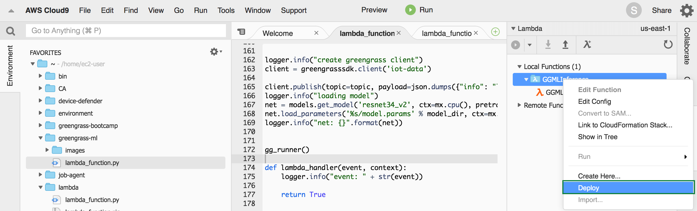
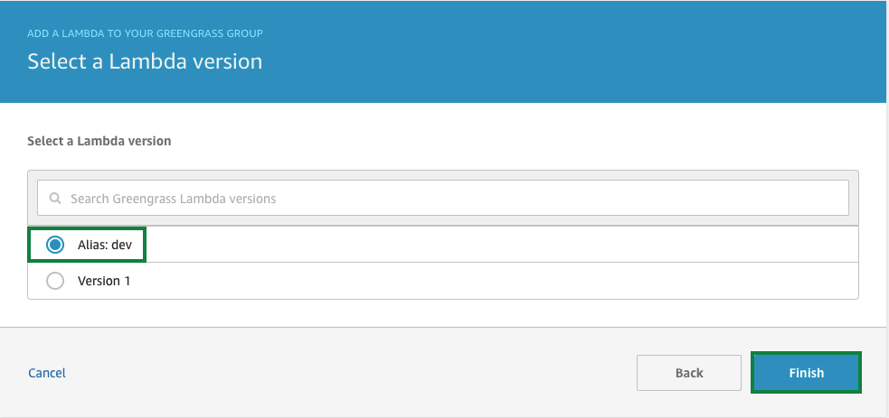

실습5. ML-Inference Lambda 생성 및 image 분류(25분)
Create ML-Inference Lambda
이제 Lambda 함수를 만들어야합니다. 이 Lambda 기능은 Greengrass Core에 배포됩니다. 이 기능은 SageMaker에서 이전에 학습한 기계 학습 모델을 로드합니다. 그런 다음 정기적으로 이미지 디렉토리를 스캔합니다. 이미지가 발견되면 모델별로 분류되어 결과가 클라우드로 전송됩니다.
Lambda 함수에는 나중에 연습에서 두 가지 리소스가 할당됩니다.
- 기계 학습 리소스 : 학습한 모델
- 볼륨 자원 (volume resource) : 이미지를 스캔하는 디렉토리
Greengrass에서 실행해야하는 Lambda 함수에는 버전이 있어야합니다. 버전 외에도 함수 별칭(alias)을 작성합니다.
Greengrass의 요구 사항은 아니지만 Greengrass에서 리소스를 쉽게 할당하거나 구독을 만들 수 있습니다. 리소스/구독이 버전에 할당되면 새 버전의 Lambda를 배포할 때 업데이트해야 하는데, 별칭(alias)을 사용하면 이러한 번거로움을 피할 수 있습니다. 새 버전을 만든 경우 새 버전에 별칭(alias)만 지정하면 됩니다.
여러분이 Lab 1에서 CloudFormation을 활용하여 생성한 EC2 인스턴스(Cloud9 IDE가 실행되는)에 함수를 작성하는 데 필요한 Lambda 함수 코드가 이미 준비되어 있습니다.
먼저 Cloud9 IDE를 보시면, 이름이 GGMLInference 인 Lambda 함수가 이미 생성되어 있습니다. 그러나 기능을 수정해야 합니다.
Cloud9 IDE에서:
AWS Resources 창이 표시되지 않으면 AWS Resources 버튼을 선택하십시오.
AWS Resources 창의 Lambda 섹션을 확장하십시오. Local function 아래에 GGMLInference 함수가 있습니다.
이제 기존 코드를 학습 한 모델을 사용하는 함수 코드로 바꿔야합니다. 코드는 이미 준비되어 있습니다.
FAVOURITES 아래에서 ~를 확장하고 greengrass-ml 폴더를 찾습니다.
lambda_function.py를 찾아서 오른쪽 마우스를 클릭 후 Open을 클릭하여 파일을 엽니다.
방금 연 창에서 다른 lambda_function.py 창으로 코드를 복사하십시오.
다른 창에 코드를 복사한 후, File -> Save를 클릭하여 함수를 저장합니다.
코드가 수정되면 Lambda 함수를 배포할 수 있습니다. 오른쪽 창의 GGMLInference 에서 우측 마우스를 클릭한 후 Deploy를 클릭합니다.

Lambda 함수는 cloud9-GGMLInference-GGMLInference-<unique_string>과 비슷한 이름으로 AWS Lambda 서비스에서 생성됩니다. 함수 이름 끝에있는 문자열은 고유하며 자동으로 생성됩니다.
Lambda 함수가 AWS Greengrass와 함께 작동하려면 버전과 선택적으로 별칭을 생성해야합니다. 오른쪽 창에서 GGMLInference에서 오른쪽 마우스를 클릭하고 Deploy를 클릭합니다.
Lambda 함수는 cloud9-GGMLInference-GGMLInference-<unique_string>과 비슷한 이름으로 AWS Lambda Service에서 생성됩니다. 함수 이름 끝에있는 문자열은 고유하며 자동으로 생성됩니다.
Lambda 함수가 AWS Greengrass와 함께 작동하려면 버전과 선택적으로 별칭을 생성해야합니다. 버전과 별칭(alias)을 만들기 위해서 AWS Lambda console로 이동합니다. 앞서 생성하 Lambda function을 찾아서 클릭합니다.
Actions에서 Publish new version을 선택합니다.
Version description은 그대로 비워 놓으셔도 됩니다. Publish를 클릭합니다.
다시 Actions에서 Create alias을 선택합니다.
Name: dev, Version: 1 을 립력하고 Create를 클릭합니다.
Greengrass Group에 ML-Inference Lambda 할당
Greengrass에서 Lambda 함수를 사용하려면 AWS Lambda에서 생성된 함수를 Greengrass Group에 할당해야 합니다.
Greengrass의 Lambda 기능은 디렉토리에서 이미지를 정기적으로 스캔해야 하므로 long running function으로 구성됩니다.
Greengrass console로 이동한 후, Groups 메뉴를 선택합니다.
그리고, 앞서 생성한 greengrass-ml을 클릭합니다.

Lambdas를 선택하고, Add Lambda를 클릭합니다.
Use existing Lambda를 클릭합니다.

기존에 생성하신 cloud9-GGMLInference-GGMLInference-<unique_string> 형식의 lambda 함수를 선택합니다.

Alias: dev를 선택하고 Finish를 클릭합니다.

추가된 lambda에서 …메뉴를 클릭하고 Edit configuration를 클릭합니다.
Memory limit: 1024 MB 로 설정하고 Make this function long-lived and keep it running indefinitely를 선택하고, update를 클릭합니다.
Greengrass Group에 Resources 할당
Lambda 함수에서 사용하려면 SageMaker를 사용하여 생성한 이미지 분류 모델을 Greengrass Group에 Machine Learning Resource로 할당해야합니다. 또한 이미지를 검색(scan)할 디렉토리는 로컬 자원으로 지정되어야 합니다.
Greengrass console로 이동한 후, Groups 메뉴를 선택합니다.
그리고, 앞서 생성한 greengrass-ml을 클릭합니다.
Resources를 클릭하고 Local탭에서 Add a local resource를 클릭합니다.

그리고, 아래와 같이 설정합니다.
- Resource name: ImageDirectory
- Check Volume에서
- Source path: /greengrass-ml/images/cifar10
- Destination path: /images
- Automatically add OS group permissions of the Linux group that owns the resource을 선택
- Lambda function affiliations 에서 cloud9-GGMLInference-GGMLInference-<unique_string>을 선택하고, Read and write access을 선택
Save를 클릭하여 변경 사항을 저장합니다.
Machine Learning tab에서 Add a machine learning resource를 클릭합니다.
- Resource name: ModelImageClassification
- Use a model trained in AWS SageMaker 선택
- SageMaker model: SageMaker에서 모델을 학습하는 데 사용된 Traning job 이름을 선택하십시오. greengrass-ml-cifar10-year-month-day-hour-minute-second-millisecond와 같은 형식으로 보여집니다.
- Local path: /models/image-classification
- Lambda function affiliations: cloud9-GGMLInference-GGMLInference-<unique_string> 선택하고, Read-only access으로 그대로 둡니다.
Save를 클릭하여 변경 사항을 저장합니다.

구독(Subscription) 생성
구독(subscription)은 소스(source), 대상(target) 및 주제 필터(topic filter)로 구성된 라우팅 규칙입니다. 구독(subscription)은 어떤 소스(source)가 어떤 주제(topic)와 통신할 수 있는지 정의합니다. 이미지 분류를 수행하는 Lambda 함수는 이미지를 찾거나 분류했을 때 메시지를 생성합니다. 이러한 메시지는 AWS 클라우드로 전송되어야 합니다.
Greengrass console로 이동한 후, Groups 메뉴를 선택합니다.
그리고, 앞서 생성한 greengrass-ml을 클릭합니다.
Subscriptions을 선택하고, Add Subscription을 클릭합니다.
다음과 같이 선택한 후, Next를 클릭합니다.
Ssource: Lambdas -> cloud9-GGMLInference-GGMLInference-<unique_string>
Target: Services -> IoT Cloud
topic filter: greengrass/ml/inference/# 와 같이 입력합니다(선택 사항)
Next를 클릭합니다.
Finish를 클릭합니다.
Actions -> Deploy를 클릭합니다.
이미지 분류 Classify Images
Lambda 함수는 5 초마다 /greengrass-ml/images/cifar10 디렉토리를 검색합니다. png 또는 jpg 형식의 이미지 이미지가 발견되면 ml 모델을 사용하여 분류됩니다. 분류 결과는 MQTT 메시지로 게시되고 AWS 클라우드로 전송됩니다.
EC2 인스턴스에서 ~/greengrass-ml/images 디렉토리에 예제 이미지가 있습니다. Lambda가 스캔하는 디렉토리에 하나 이상의 이미지를 복사하고 AWS 클라우드에서 결과를 찾고 Lambda 함수의 로그 파일도 살펴보십시오.
AWS IoT Core console로 이동 후에, Test 메뉴에서 다음 topic을 구독(subscribe)합니다.
- greengrass/ml/inference/#

Cloud9 terminal에서 (root user로) 하기 명령을 실행합니다:
sudo su -
cd /greengrass/ggc/var/log/user/[YOUR_AWS_REGION]/[YOUR_AWS_ACCOUNT_ID]
tail -f cloud9-GGMLInference-GGMLInference-*.log
아래는 예제입니다.
sudo su -
cd /greengrass/ggc/var/log/user/us-west-2/576184218696
tail -f cloud9-GGMLInference-GGMLInference-*.log
Cloud9 terminal을 하나 더 추가하고 (ec2-user로) 하기 명령을 실행합니다:
cd ~/greengrass-ml/images/
sudo cp bird1.png /greengrass-ml/images/cifar10
greengrass/ml/inference/greengrass-ml_Core 주제(topic)에서 다음과 유사한 메시지를 수신해야 합니다.
~/greengrass-ml/images/ 폴더 내의 다른 이미지를 사용하여 추가적인 테스트를 할 수 있습니다.
- airplane1.png
- automobile1.png
- bird1.png
- cat1.png
- deer1.png
- dog1.png
- frog1.png
- horse1.png
- plane-draw.jpeg
- ship1.png
- truck1.png